design/2026-10-essays · pn · rounds 1–2 · 2026-10-05 · Fred picked A
The end of an essay: on to the previous or the next one
文章页的底部的导航需要重做（返回上一篇、去下一篇），我觉得现在的设计不好看；而且比如到了最后一篇文章后返回上一篇占掉了整个底部空间。
Fred, 2026-10-05
Three candidates, each running on the real Reading page: the page and its modules are production's, unchanged, and the board only swaps what nav.pn holds. Open the page below at full size, pick an ending in the bar at the lower left, choose an essay (the middle one, the newest with no next, the oldest with no previous), and resize the window to a phone's width; the page's own 中/EN and ◐ buttons switch language and dark paper. Click a neighbour and the ending you picked comes along.
open straight at A · middle B · newest C · oldest now · newest contact sheet

Round 2 · A's way back to all writingFred picked A, kept today's direction (上一篇 older on the left), and kept the way back, but round 1's “← 书架” slip on the lip wasn't pretty. Three ways a shelf carries it, quiet beside the books, in the page's language, with the pen's states. Pick one in the bar (“A's way back”).
吊牌 · a hanging tag
一张纸吊牌用细线挂在板子下面，写着「← 全部文章」，略歪；指上去它荡一下回正。书店书架上常见的小吊卡，最像一件真东西。
A paper tag on a thread from the plank’s underside, a little askew; pointed at, it swings once and settles.

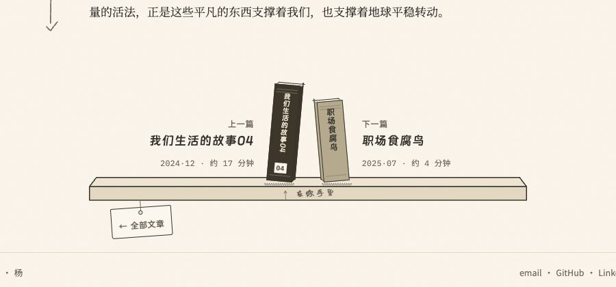

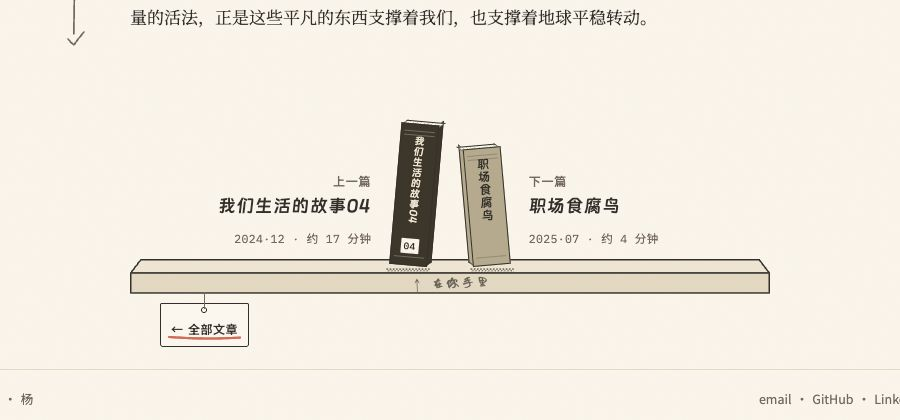

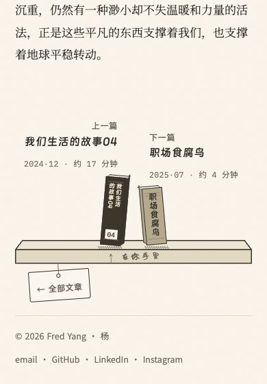

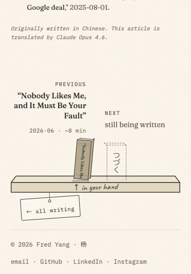

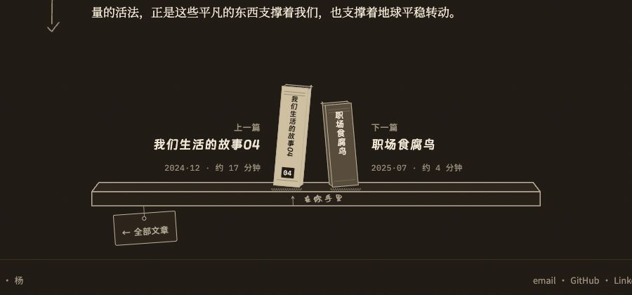
「全部」签 · Writing’s “all” tab
就是 Writing 索引里那个「all 全部 27」的书签，从板沿底下抽出来一截；指上去再往外抽一点。和 Writing 是同一套东西，一看就知道是回到全部。
Writing’s own “all 全部 27” index tab, out from under the lip; pointed at, it comes out a little further.

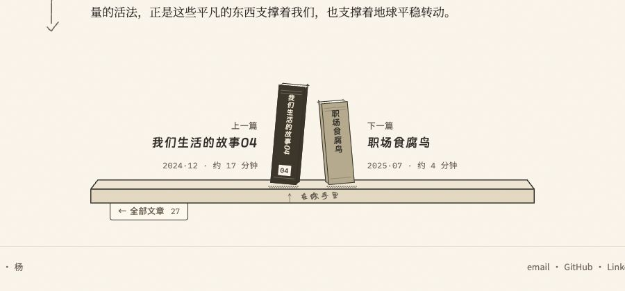

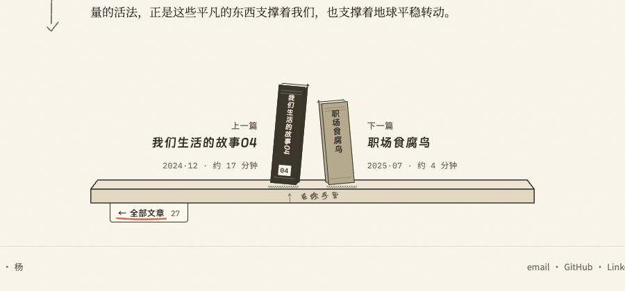

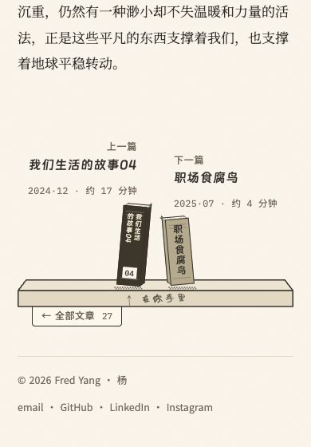

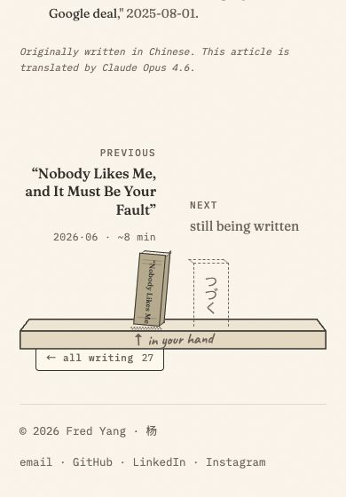

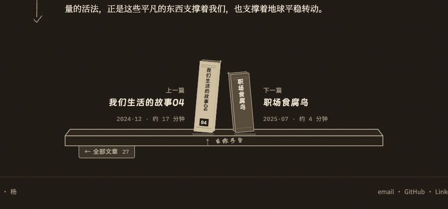
印在板边 · printed on the lip
字直接印在板沿上，像图书馆书架边上的分类号，什么都不加。最安静，但和「↑ 在你手里」挤在同一条板沿上。
Printed straight on the lip, as a library shelf carries its range; nothing else.

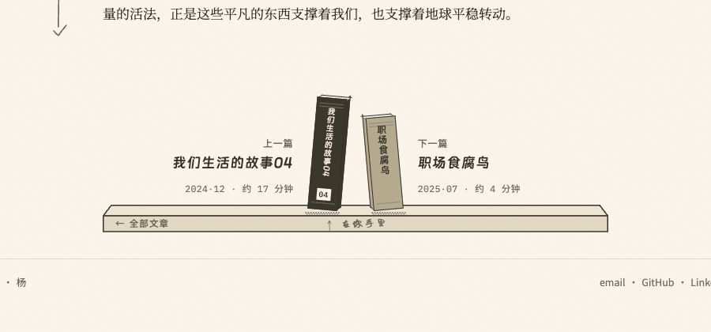

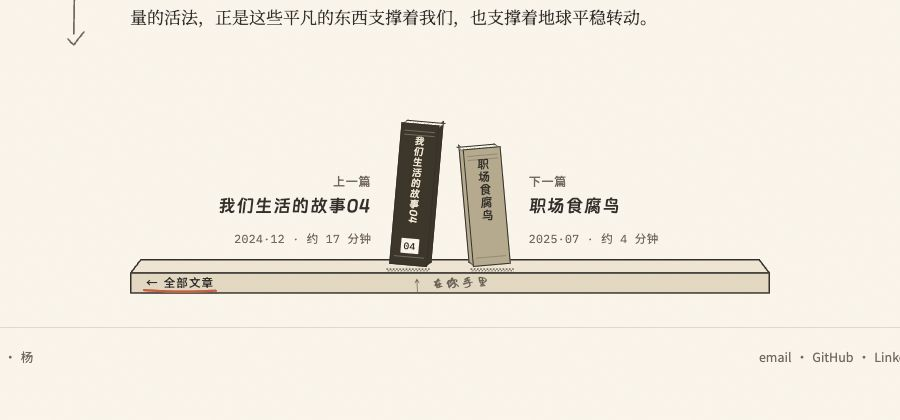

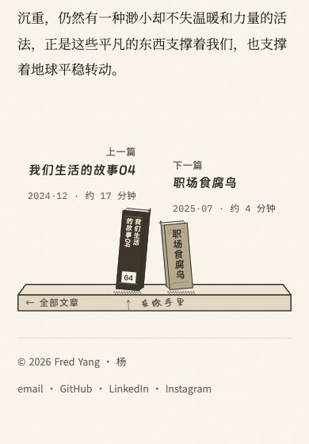

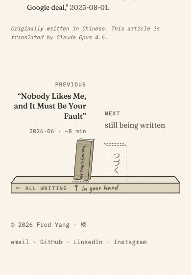

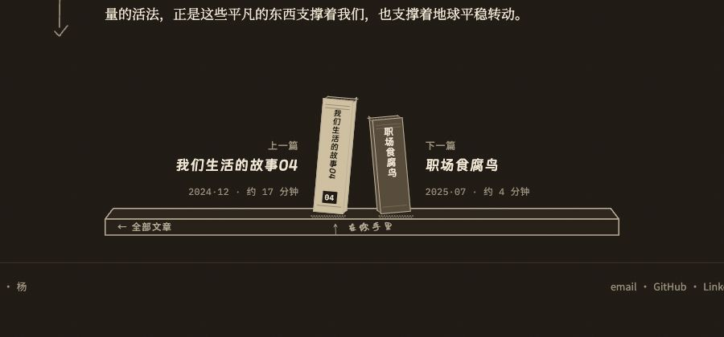
My pick: 「全部」签, the tab. It is the tab Fred already knows from Writing's index, so it reads at once as “all writing” and belongs to the site; it sticks out only 26 px under the plank and stays quieter than the books. The tag is the charming one if a little play is welcome; the printed label is the quietest but shares the lip with “↑ 在你手里”.
TodayTwo rounded cards on paper2 with a border and a shadow, the only cards on Reading.
- The nav sits in the page's 1200 px wrap, not the 640 px text column, so each card is 546 px wide and a lone card 1108 px: on the newest essay (no next) and the oldest (no previous) one card spans the whole width, which is what Fred noticed.
- The cards look like a generic template: nothing in them belongs to the site's registers (the shelf, the held book, the dossier, the pencil), and the pen's states don't reach them (only the 「 」 that every Reading link gets).
- The label is 11 px pencil, the title 16 px; nothing says where this essay sits, or why a side is missing.

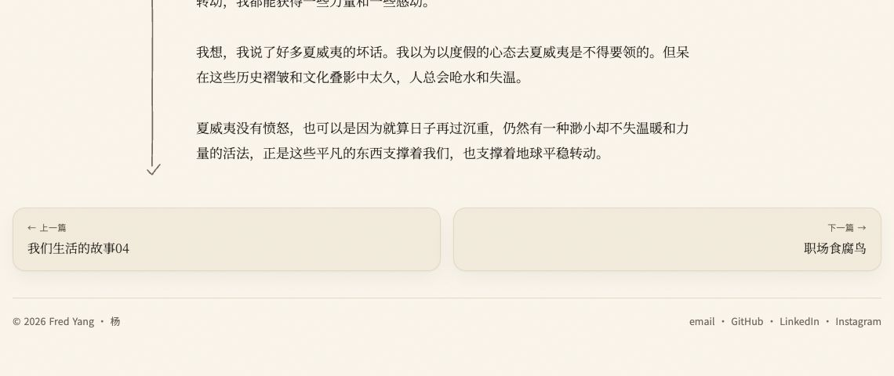

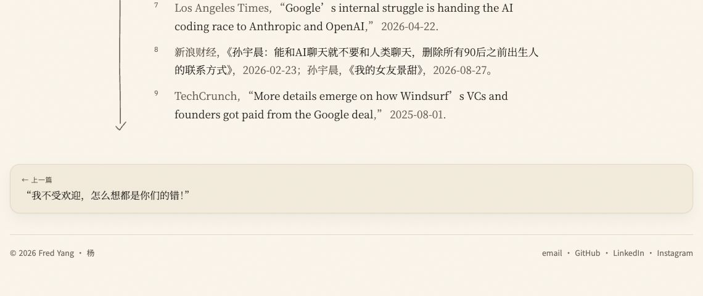

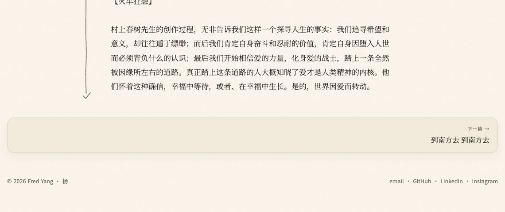


A · 书架 · the shelfA short stretch of Writing's shelf. Line-led, the same books as on Writing.
文末接上 Writing 的书架：这一本在你手里，架上留个空位，左右两本向空位歪着，书名写在旁边，伸手就能抽下一本。没有下一篇时站着书架上那个虚线的「つづく」，没有上一篇时书架就到头了：少一个邻居只是少一本书，不会有卡片撑满整行。
The book you are reading is out, so its slot is empty and its neighbours lean into the gap, as Writing's do when you pull one. Each neighbour is the same book as on the shelf (width, height and tone come from its place in the order), named on a label beside its spine. A printed slip on the plank's lip goes back to the shelf.
- One neighbour: Writing's dashed つづく ghost stands where a newer essay would (“下一篇 · 还在写”); before the oldest the shelf simply ends (“这是最早的一篇”). The plank is the same length in every case.
- Hover: the book comes up out of its lean on the physics clock, leaving its contact stipple behind, and the pen underlines its name. Keyboard: the coral 「 」. Reduced motion: nothing moves, the pen still marks it.
- Phone: each name stands over its book, so the gap stays between the books. About 190 px tall on the desk, 250 on a phone. No images.

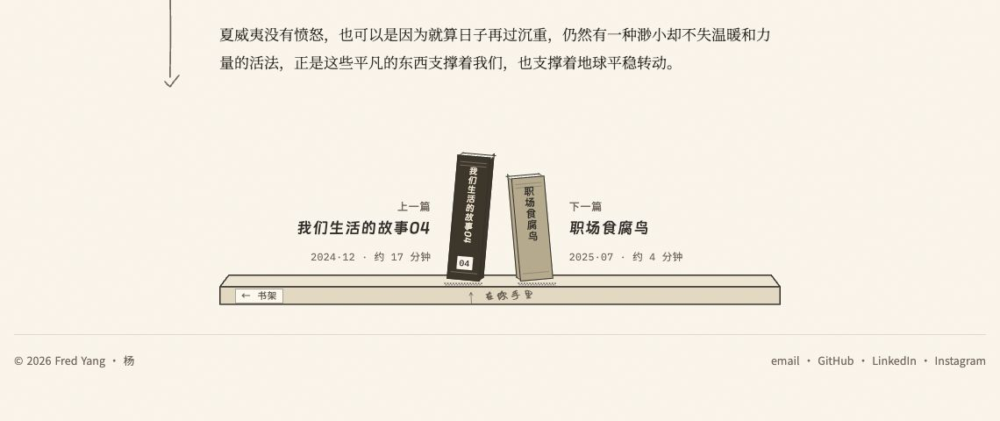

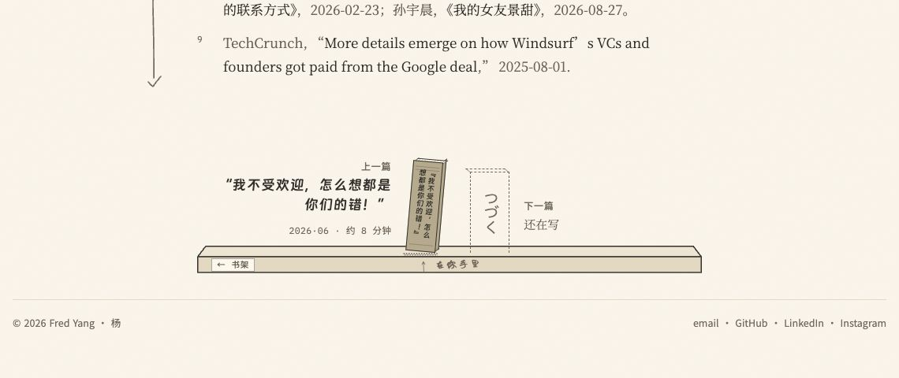

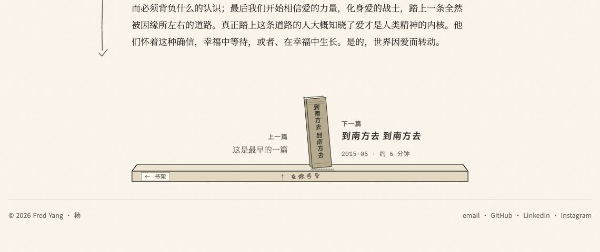

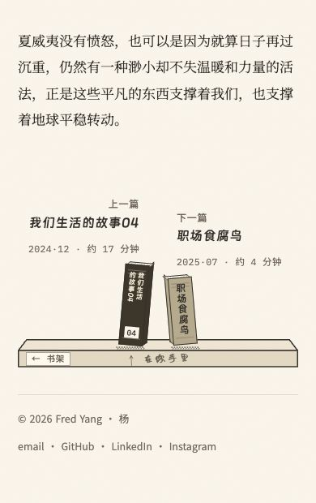

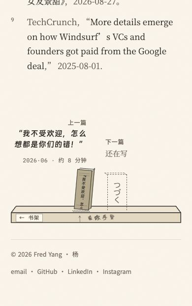

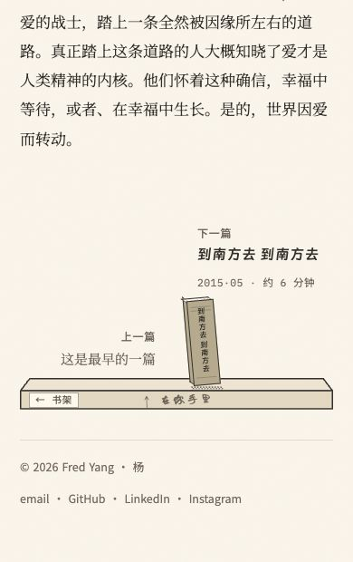

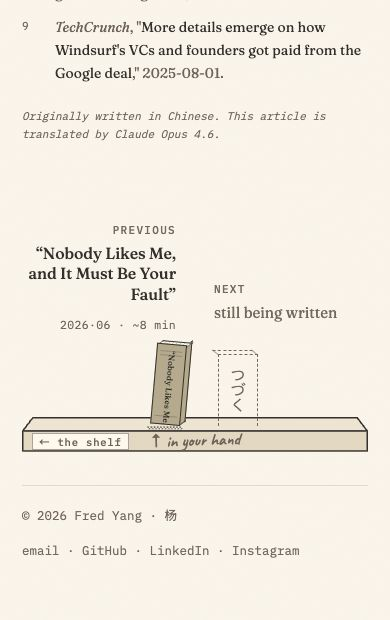

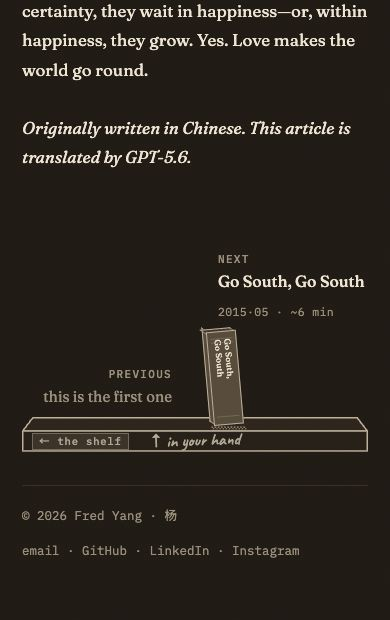


design record
- source
- Writing's bookcase (lib/writing/case.js, writing.css) → the end of an essay on Reading
- facts
- flat tones and ink edges, no light source · a pulled book leaves a gap its neighbours lean into · the つづく ghost waits where the next essay will stand · the shelf's label is a printed slip on the lip
- took / left
- took the books' sizes and tones, the lean, the ghost, the stipple, the lip's slip · left the 3D camera and the pull gesture (a static elevation, square on, the camera on the gap)
- distance · carrier
- low (the same books) · line-led, moderate resolution
- expression anchor
- the lean into the gap: the material consequence of the book in your hand
- line plan
- one 1.5 px ink edge for every face; hairline bands; pencil for the ghost and the note on the lip
- colour plan
- Writing's four tans and the series' dark cloth, the plank's two tones; no colour at rest; coral only as the pen's hover line
B · 拿在手里 · in handThe neighbours as Writing holds a pulled book. Hybrid: the covers carry the colour, the obi the words.
把前后两篇像 Writing 里抽出来的书一样拿在手里：真封面，腰封上写书名、月份、篇幅和一句铅笔旁注，一手一本，大小固定。最新一篇的另一只手拿着「つづく」的虚线书，最早一篇的另一只手是藏书票：这套书从这里开始。
Each neighbour is its front board, the real cover under a paper obi (both titles, the page's language first; month, length, tag; Writing's dry pencilled aside), held a little askew, older left and newer right, at one size whatever is beside it.
- One neighbour: the empty hand holds Writing's つづく ghost (newest) or the library's bookplate, the inside of the front cover, “it starts here · 2015” (oldest).
- Hover: the board comes square and up on the physics clock; the pen's line is drawn on the obi itself, so it tilts with the board, as Writing's does. Keyboard: 「 」. Reduced motion: nothing moves.
- Phone: the two boards side by side, 166 px each. About 330 px tall. Costs the two neighbours' board images (Writing's own 240/480 px crops, lazy-loaded at the end).

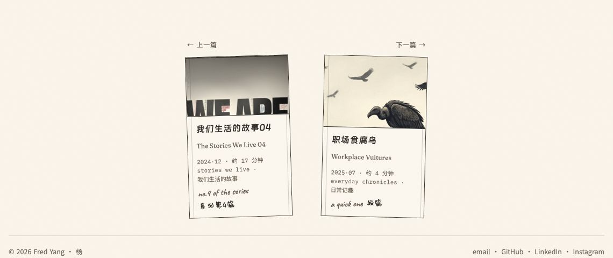

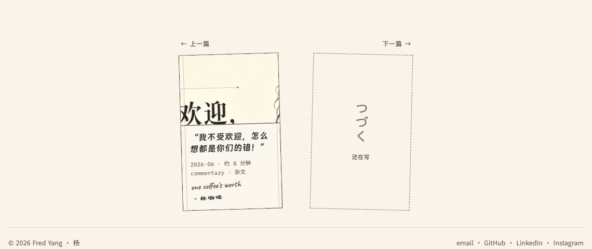

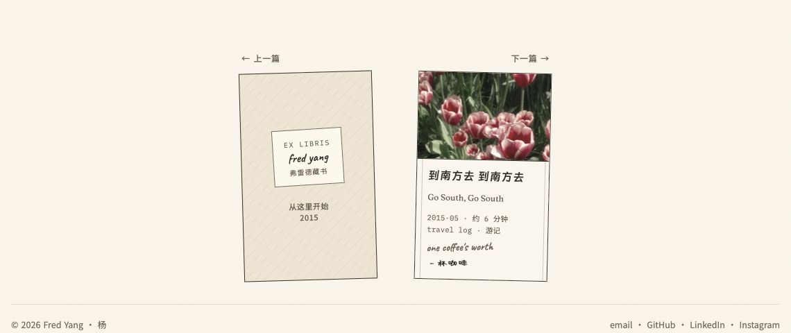

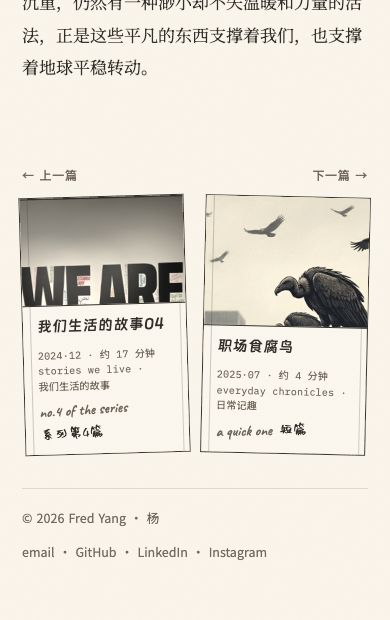

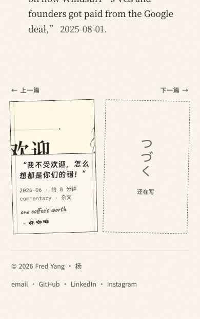

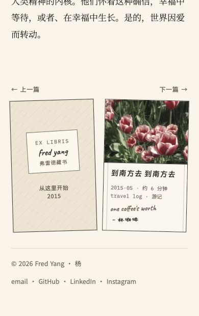

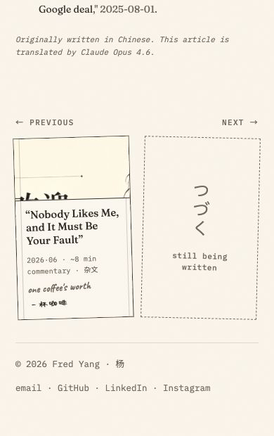

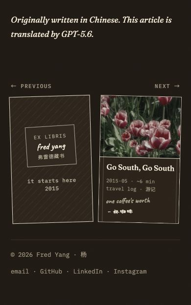

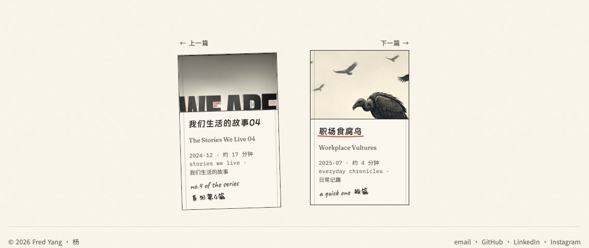

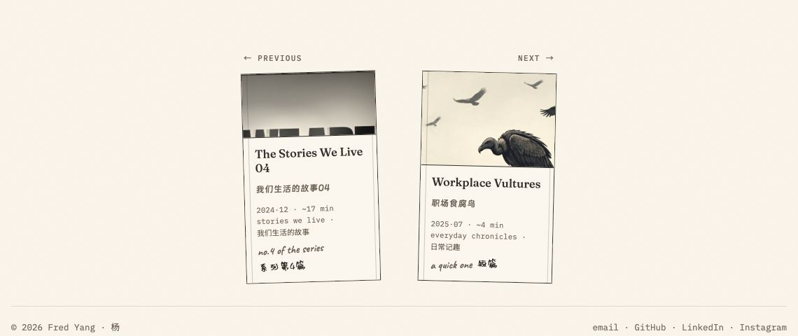

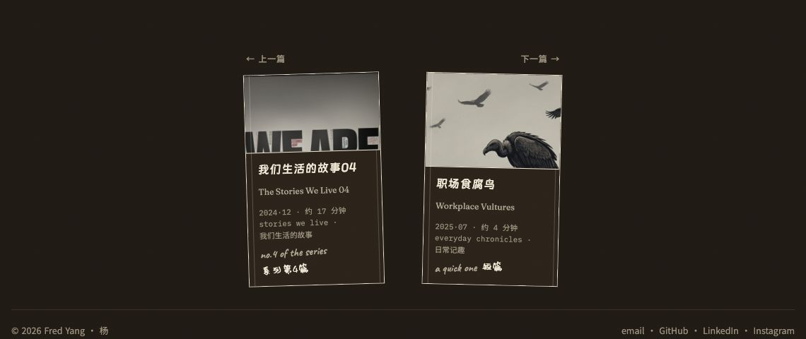
design record
- source
- Writing's book in your hand (lib/writing/pull.js, writing.css .obi, .exlib, .g-front) → the end of an essay
- facts
- a pulled book turns to show its real cover under a paper obi · the obi carries both titles, the month and length, the tag and a pencilled aside that notices length, not quality · the board's reverse is a bookplate
- took / left
- took the board, the obi's whole typesetting, the aside, the bookplate, the ghost · left the 3D turn and the open-to-title-page gesture
- distance · carrier
- low · hybrid, moderate to rich: remove the covers and it loses its pull, remove the obi and it loses its words
- expression anchor
- held a little askew in each hand, squared when you reach for it
- line plan
- 1.5 px ink board edges, the hinge and the obi's fold as hairlines; pencil dashes for the ghost
- colour plan
- the covers, desaturated as Writing shows them (saturate .58, sepia .18), are the only colour mass; the obi's slip paper; pencil type; no coral at rest
C · 铅笔线接着走 · the pencil line goes onReading's own margin rail, carried on into a three-line contents. Line-led and typographic.
Reading 左边那条铅笔线读完打了 ✓ 之后接着往下走，串起三行目录：上一篇在上、这一篇（麦色高亮）居中、下一篇在下，「上」「下」正好就是字面上的上下。没有卡片，只有字、一条铅笔线和笔的状态；没有下一篇时线变成虚线，走向「つづく」。
Three ruled lines in the order the essays were written: date, title, length and tag, and on the right what each one is. The graphite line runs down the margin at the rail's own x (56 px left of the text) and ticks each line; this essay carries the wheat band, the current mark.
- One neighbour: the pencil goes on dashed to “つづく · 还在写” (newest), or starts at this essay under “这是最早的一篇” (oldest). Always three lines, so the end of every essay has the same shape.
- Hover: the pen's underline on the title; keyboard: 「 」. Nothing moves, so reduced motion changes nothing.
- Phone (where the rail is a strip): the line runs down the column's left edge and the date and direction share a line over the title. About 270 px tall. No images.


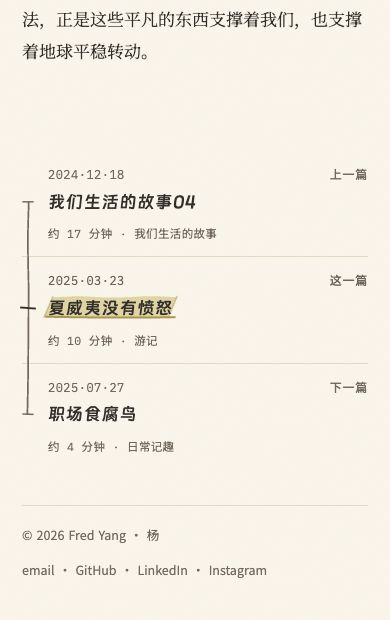

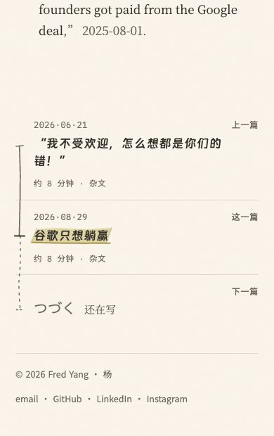

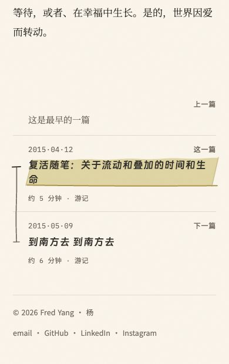

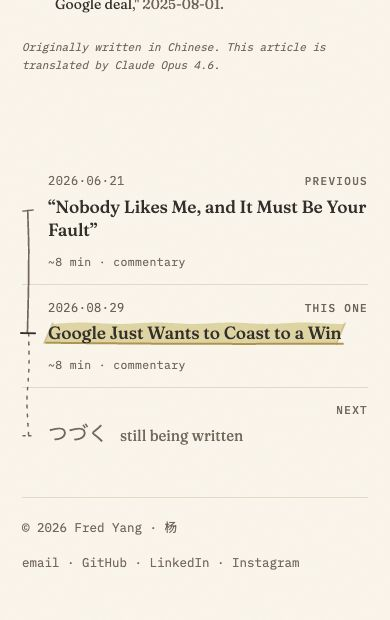


design record
- source
- Reading's pencil margin (lib/reading/rail.js, rail.css) and Writing's year ledger → the end of an essay
- facts
- a graphite line in the margin draws as you read, ticks each landmark and closes with a ✓ · the current landmark carries the wheat mark · 上 and 下 are literally above and below
- took / left
- took the line, its hand and its x, the ticks, the wheat current mark · left the peek and the strip; the contents is new grammar
- distance · carrier
- medium (the rail's grammar, recomposed as a contents) · line-led typographic, low resolution
- expression anchor
- the same pencil carrying on past its ✓
- line plan
- one graphite line, ticks, the current tick in ink; hairline rules between lines; dashes for what isn't written yet
- colour plan
- the wheat band on this essay's title is the only colour; pencil and ink type; no coral at rest
recommendation
A, the shelf. It is the most this site's own: the end of an essay becomes the shelf the essay came from, so going on reads as putting this book back and taking the next. It answers both halves of the note at once: it looks like Writing, not a template, and a missing neighbour is one book fewer, with the site's own つづく doing the explaining. It is compact, costs no image bytes, and a book looks the same here as on the shelf. B is the more inviting (real covers pull you on) but twice as tall and two images heavier; C is the quietest and the safest, the one to take if the end of an essay should stay purely typographic.
only Fred can answer
- Which one (or which parts together, say A's shelf with C's “this one” line)?
- Which way time runs. Every candidate keeps today's meaning, 上一篇 = the older essay on the left (or above), 下一篇 = the newer. Writing's own shelf runs the other way, newest first with つづく at its left, so A's little shelf is its mirror. Mirror A to match Writing (下一篇 would then stand on the left), or keep left = older?
- The way back. A carries a “← 书架” slip on its plank's lip, going back to Writing; B and C leave that to the top bar's “← 全部文章”. Keep the slip?
What was checkedOn the real Reading page, production files untouched (scripts in /tmp, not committed).
- 3 candidates × 3 essays × 1440 and 390 × 中 and EN × light and dark (72 renders): the page never scrolls sideways and nothing leaves the window; the links go to the older and newer essays; text holds 4.5:1 (3:1 when large) on whatever it sits on; tap targets are ≥ 44 px tall on a phone; no text overlaps; nothing is coral at rest and no small text is coral; the pen's underline keeps its spacing (≥ 10 px and ≥ 2 × its drop to whatever follows, the rule of scripts/verify/pen-spacing.mjs).
- Hover draws the coral line (tier 1), keyboard focus draws 「 」 (on :focus-visible), a press draws the wheat band; reduced motion moves nothing. No console errors.
- The full-size page switches candidates and essays, and keeps the ending you picked when you click a neighbour.
- For a port: the hand's subset lacks 你 手 (A's note) and the UI sans lacks 还 开 始 (B's ghost and bookplate); the board falls back to the hand's full master and the system's sans, and a port's rerun of generate-fonts.py picks them up from the page text. つづく is in neither, on Writing as here.